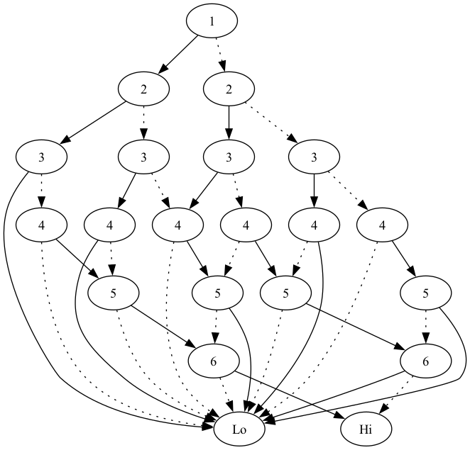
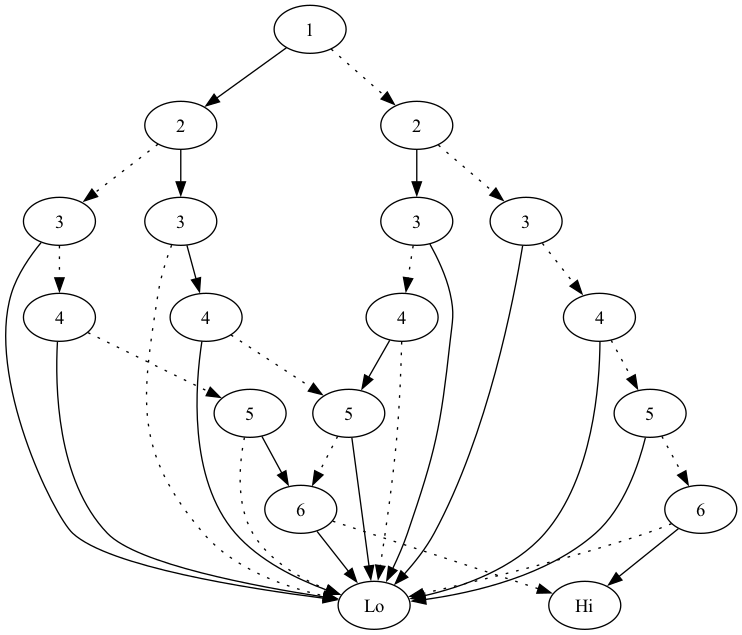
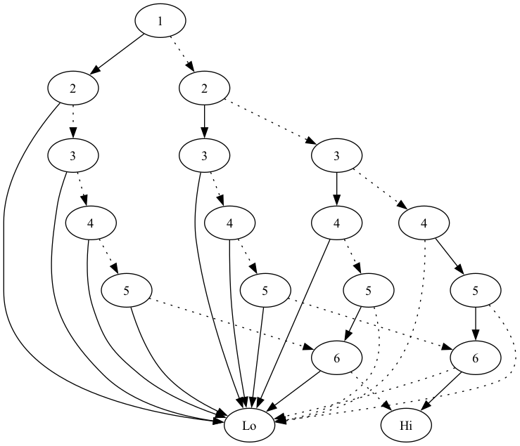
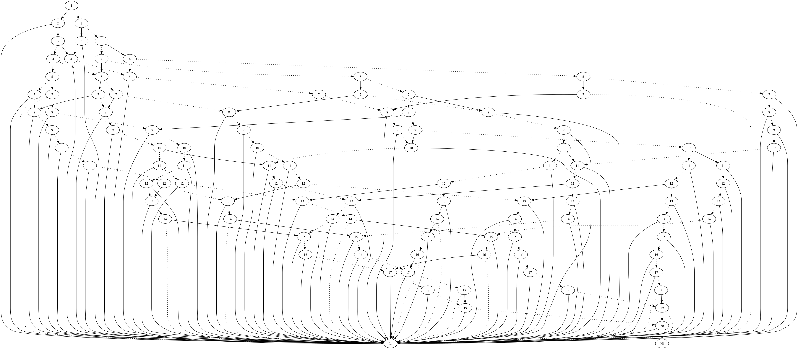
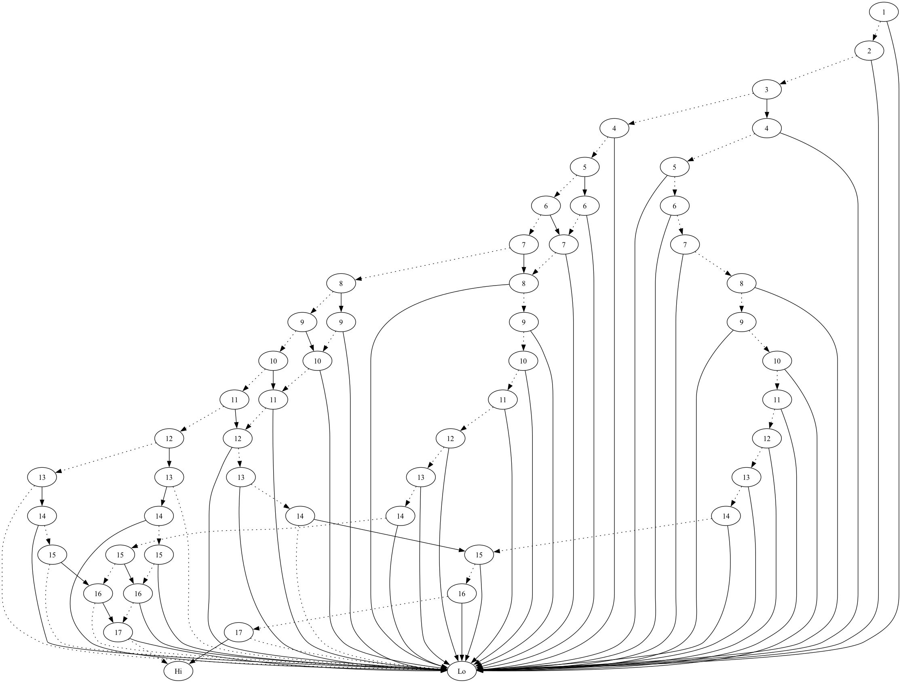

Wasting time looking at many ways to sum to a number.
Table of Contents
- Musings on the "N-Sum" problem
- At any rate, is there a fun way to do this?
- Basics
- Constructing a BDD for Sums.
- Now, lets make something that can count solutions.
- What if I want to see solutions?
- What if I want to see the BDD?
- I'm also curious on how many nodes are in the BDD.
- Trying it out.
- And the visualizations
- Closing thoughts.
Musings on the "N-Sum" problem
A common interview question for a while was "are there two (or three) numbers that sum to a target in a list?" I confess I still like this as an interview question, as it is easy to talk through different things you can do.
The basic implementation I would coach people towards is small enough and easy to have discussions on. Even if what you would get would have obvious performance concerns. I can hope nobody is doing this in production. (Not that I really expect what I want to do to be a good idea, either…)
At any rate, is there a fun way to do this?
I'd like to say that there is a good reason to think of doing this a different way. There probably is, but I don't know it right off. I just want to have fun coding a Binary Decision Diagram (BDD) structure.
I suppose this lets me extend the puzzle a bit, of course. Instead of asking if a sum exists, I can find all ways to sum to a number in a fairly straight forward way.
There is also a neat trick where you can combine BDDs to limit the answer to only using a set number of values. Or only even values. Or whatever.
I will probably not code that trick here.
Basics
I will be taking a lot of the conventions from Knuth's discussion of BDDs. I may play with generating random lists of numbers to look at, as well. Will likely just stick to a general range of numbers.
To begin, the basic idea of a BDD is that we look at each "variable" in turn and take a branch on whether or not the variable is true. Where, for this, true means number is included in the sum.
For our main structure, this means we need to know what variable we are looking at, and then we need to know what decision to go to next. With a "hi" being when this variable is true, and a "lo" when it is false. I will also keep an "aux" field for use in construction and then counting.
(defstruct bdd-node v hi lo aux)
Rather than try and wire everything together using object references, I have grown fond of the "array of nodes" idea to patch things together in. Where the "hi" and "lo" values will be indexes into this array to know what node is next.
This has the gigantic advantage that I can traverse all of the nodes bottom up in a basic scan of the array. I will use that for counting solutions. Can even breadth first traverse the nodes in a basic scan for showing the nodes.
To that end, our overall "bdd" struct will be an array of nodes with the first two nodes being the two nodes that correspond to True and False/Bottom. The rest tied together through links.
Constructing a BDD for Sums.
What, then, does construction look like? I'm opting for a semi "literate" style here. We'll see how that turns out.
Outline of function
The basic outline of our function is straight forward enough. Take in the numbers we are considering and our target. Go ahead and build a basic array to hold our nodes, and then get ready to start building. Expect that we will need some extra variables, and the meat of the iteration will come later.
That said, no reason not to go ahead and put the two base nodes of the structure in. The "aux" fields are not super important on them, but going ahead and giving them something.
(defvar *max-num-nodes* 1000000) ; Just a stab at how much headroom I need. (defun make-sums-bdd (nums target) (let* ((num-nodes *max-num-nodes*) (bdd-nodes (make-array num-nodes)) (v_max (length nums)) <<extra variables>>) (setf (elt bdd-nodes 0) (make-bdd-node :v (+ 2 v_max) :hi 0 :lo 0 :aux 0) (elt bdd-nodes 1) (make-bdd-node :v (+ 1 v_max) :hi 1 :lo 1 :aux target)) <<start at v_1 and build nodes>> bdd-nodes))
Start at v1 and build nodes.
As the name of the section implies, we will be starting at v1. Where v1 represents whether we include element 0 of our numbers. (Yes, if I care about speed and plan on indexing into the numbers, I should make sure our input numbers is an array. No, I'm not going to do that here.)
Largely for aesthetics, I start the root of the bdd at the tail end. From there, my convoluted steps are the following:
- Set nodei, cur-v, cur-num, and cur-aux to current values according to i. If nodei is not a bdd-node, or cur-v is greater than vmax, go to step 6.
- If we are at vmax, then if adding 0 to current aux gives target, set lo to 1, otherwise 0. If adding current num to aux gives target, set hi to 1, otherwise 0. Decrement i and go back to step 1. If not at vmax, Set j = i - 1 and continue to step 3.
- Find or create node to connect lo to. Walk variable j down to 0 looking for either existing node with v = cur-v + 1 and aux = cur-aux, or creating it if nodei[j] isn't a node, yet. Set current lo to j. Set j back to i - 1 and continue to step 4.
- Find or create node to connect hi to. If cur-aux + cur-num is <= target, walk j down to zero looking for node that matches. Set current hi to j. Otherwise, set current hi to 0.
- Set i = i - 1, go to step 1.
(setf i (1- num-nodes)
(elt bdd-nodes i) (make-bdd-node :v 1 :hi -1 :lo -1 :aux 0))
(tagbody
s1
(setf node_i (elt bdd-nodes i))
(if (not (bdd-node-p node_i))
(go s6))
(setf cur-v (bdd-node-v node_i)
cur-num (elt nums (1- cur-v))
cur-aux (bdd-node-aux node_i))
(if (> cur-v v_max)
(go s6))
s2
(when (eq cur-v v_max)
(if (= cur-aux target)
(setf (bdd-node-lo node_i) 1)
(setf (bdd-node-lo node_i) 0))
(if (= (+ cur-num cur-aux) target)
(setf (bdd-node-hi node_i) 1)
(setf (bdd-node-hi node_i) 0))
(setf i (1- i))
(go s1))
(setf j (1- i))
s3
(when (not (bdd-node-p (elt bdd-nodes j)))
(setf (elt bdd-nodes j) (make-bdd-node :v (1+ cur-v) :hi 0 :lo 0 :aux cur-aux)))
(when (not (eq (bdd-node-aux (elt bdd-nodes j)) cur-aux))
(setf j (1- j))
(when (= j 1)
(error "Effectively out of memory. Rerun with more headroom, or rework algo."))
(go s3))
(setf (bdd-node-lo node_i) j
j (1- i))
s4
(when (> (+ cur-num cur-aux) target)
(setf (bdd-node-hi node_i) 0)
(go s5))
(when (not (bdd-node-p (elt bdd-nodes j)))
(setf (elt bdd-nodes j) (make-bdd-node :v (1+ cur-v) :hi -1 :lo -1 :aux (+ cur-num cur-aux))))
(when (not (and (eq (bdd-node-aux (elt bdd-nodes j)) (+ cur-num cur-aux))
(eq (bdd-node-v (elt bdd-nodes j)) (1+ cur-v))))
(setf j (1- j))
(when (= j 1)
(error "Effectively out of memory. Rerun with more headroom, or rework algo."))
(go s4))
(setf (bdd-node-hi node_i) j)
s5
(setf i (1- i))
(go s1)
<<Remove all nodes with equal hi/lo fields>>
end)
We introduced quite a few variables here, but none that are too complicated. And none that need initial values.
i j node_i cur-v cur-num cur-aux
Remove all nodes with equal hi/lo fields.
If a node has the same outcome whether it is true or false, we can remove it and set any reference to it to the results it was referencing.
For this reduction, we can do it from the "bottom up" on the structure. Ideally, we would also "compact" the nodes as we do this.
Steps are:
- If i = num-nodes, terminate. Otherwise, set nodei according to i. If not on a bdd-node, increment i and repeat step 6.
- If hi and lo of current node are equal, then set current node in bdd-nodes to 0 and set j = i + 1 and continue to step 8. Otherwise, set i = i + 1 and go back to step 6.
- If j = num-nodes, go back to step 6. Otherwise, if j is a valid bdd-node, check if hi = i and change it to hi of nodei. Check if lo = i and change it to lo of nodei. Set j = j + 1 and repeat step 8.
s6 (when (= i num-nodes) (go end)) (setf node_i (elt bdd-nodes i)) (when (not (bdd-node-p node_i)) (setf i (1+ i)) (go s6)) s7 (when (= (bdd-node-hi node_i) (bdd-node-lo node_i)) (setf (elt bdd-nodes i) 0 j (1+ i)) (go s8)) (setf i (1+ i)) (go s6) s8 (when (= j num-nodes) (go s6)) (setf node_j (elt bdd-nodes j)) (setf j (1+ j)) (when (not (bdd-node-p node_j)) (go s8)) (when (= (bdd-node-hi node_j) i) (setf (bdd-node-hi node_j) (bdd-node-hi node_i))) (when (= (bdd-node-lo node_j) i) (setf (bdd-node-lo node_j) (bdd-node-lo node_i))) (go s8)
And for this section, I needed another node reference.
node_j
Now, lets make something that can count solutions.
Now for a function that will annotate the BDD with solution counts. We no longer need the aux fields, so we will use that to keep the counts and can walk the generated tree bottom up and then simply return the top value at the end.
(defun bdd-count-solutions (bdd) (setf (bdd-node-aux (elt bdd 0)) 0 (bdd-node-aux (elt bdd 1)) 1) (loop for i from 2 below (length bdd) for node_i = (elt bdd i) if (bdd-node-p node_i) do (let* ((hi-node (elt bdd (bdd-node-hi node_i))) (lo-node (elt bdd (bdd-node-lo node_i))) (cur-solutions (+ (* (bdd-node-aux hi-node) (expt 2 (- (bdd-node-v hi-node) (bdd-node-v node_i) 1))) (* (bdd-node-aux lo-node) (expt 2 (- (bdd-node-v lo-node) (bdd-node-v node_i) 1)))))) (setf (bdd-node-aux node_i) cur-solutions)) finally (return (bdd-node-aux node_i))))
What if I want to see solutions?
I confess I got by just looking at the nodes created for a while. But good to actually get it to show the solutions to make sure it is correct.
Basic approach is a simple depth first traversal of the tree from the root node.
(defun show-sums-bdd-solutions (nums bdd &optional (num-solutions 20)) (labels ((diver (node included-nums) (cond ((eq node (elt bdd 0)) nil) ((eq node (elt bdd 1)) (decf num-solutions) (format t "~a~&" included-nums)) (t (when (> num-solutions 0) (diver (elt bdd (bdd-node-lo node)) included-nums) (diver (elt bdd (bdd-node-hi node)) (cons (elt nums (1- (bdd-node-v node))) included-nums))))))) (diver (elt bdd (1- (length bdd))) nil)))
What if I want to see the BDD?
For this, I am just going to lean on graphviz. With no effort to pretty print.
(defun bdd-to-graphviz (bdd) (format t "digraph G {~&") (loop for i from (1- (length bdd)) downto 2 for node = (elt bdd i) if (bdd-node-p node) do (let ((v (bdd-node-v node)) (hi-node (bdd-node-hi node)) (lo-node (bdd-node-lo node))) (format t "V~a [label=\"~a\"]~&" i v) (case hi-node (1 (format t "V~a -> Hi~&" i)) (0 (format t "V~a -> Lo~&" i)) (otherwise (format t "V~a -> V~a ~&" i hi-node))) (case lo-node (1 (format t "V~a -> Hi [style=dotted]~&" i)) (0 (format t "V~a -> Lo [style=dotted]~&" i)) (otherwise (format t "V~a -> V~a [style=dotted]~&" i lo-node))))) (format t "}~&"))
I'm also curious on how many nodes are in the BDD.
More a curiousity than much else. How many active nodes are in the BDD?
(defun bdd-count-nodes (bdd) (loop for node across bdd if (bdd-node-p node) sum 1))
Trying it out.
First, on a trivial list
(let* ((*trace-output* *standard-output*) (nums '(-3 -2 -1 1 2 3)) (bdd (time (make-sums-bdd nums 1)))) (format t "~a nodes covering ~a solutions~&" (bdd-count-nodes bdd) (bdd-count-solutions bdd)) (format t "Solutions found: ~&") (show-sums-bdd-solutions nums bdd 10))
Evaluation took: 0.000 seconds of real time 0.000846 seconds of total run time (0.000180 user, 0.000666 system) 100.00% CPU 8,000,016 bytes consed 21 nodes covering 8 solutions Solutions found: (1) (2 -1) (3 -2) (2 1 -2) (3 1 -1 -2) (3 1 -3) (3 2 -1 -3) (3 2 1 -2 -3)
Obviously, 21 nodes to store the 8 solutions is not exactly beneficial. Still, it works. And you can walk through the below diagram easily enough.

How does it do on a larger basic sequence?
Where "basic" is just counting up from one.
(let* ((*trace-output* *standard-output*) (nums (loop for i from 1 to 1000 collect i)) (bdd (time (make-sums-bdd nums 40)))) (format t "~a nodes covering ~a solutions~&" (bdd-count-nodes bdd) (bdd-count-solutions bdd)) (format t "Five example sums: ~&") (show-sums-bdd-solutions nums bdd 5))
Evaluation took: 3.580 seconds of real time 7.158027 seconds of total run time (7.148454 user, 0.009573 system) 199.94% CPU 10,162,368 bytes consed 1613 nodes covering 1113 solutions Five example sums: (40) (21 19) (22 18) (23 17) (24 16)
Does order matter?
Specifically, counting down from one?
(let* ((*trace-output* *standard-output*) (nums (loop for i from 1000 downto 1 collect i)) (bdd (time (make-sums-bdd nums 40)))) (format t "~a nodes covering ~a solutions~&" (bdd-count-nodes bdd) (bdd-count-solutions bdd)) (format t "Five example sums: ~&") (show-sums-bdd-solutions nums bdd 5))
Evaluation took: 0.003 seconds of real time 0.003579 seconds of total run time (0.002571 user, 0.001008 system) 133.33% CPU 8,131,072 bytes consed 1613 nodes covering 1113 solutions Five example sums: (1 2 3 4 6 7 8 9) (2 3 5 6 7 8 9) (1 4 5 6 7 8 9) (1 2 3 4 5 7 8 10) (2 3 4 6 7 8 10)
Answer was yes? It went much faster.
On random values?
And what about looking for a sum in a collection of random numbers?
(let* ((*trace-output* *standard-output*) (nums (loop repeat 1000 collect (random 1000))) (bdd (time (make-sums-bdd nums 400)))) (format t "~a nodes covering ~a solutions~&" (bdd-count-nodes bdd) (bdd-count-solutions bdd)) (format t "Five example sums: ~&") (show-sums-bdd-solutions nums bdd 5))
Evaluation took: 41.004 seconds of real time 73.295845 seconds of total run time (73.136984 user, 0.158861 system) [ Real times consist of 0.041 seconds GC time, and 40.963 seconds non-GC time. ] [ Run times consist of 0.038 seconds GC time, and 73.258 seconds non-GC time. ] 178.75% CPU 90,580,624 bytes consed 345545 nodes covering 58210951128428 solutions Five example sums: (109 216 75) (72 75 180 53 20) (169 211 20) (72 97 211 20) (75 180 145)
Note that that has taken up to 5 minutes on my laptop. Glad I wasn't expecting this to be an amazingly fast implementation/algorithm. :D
Does sorting speed things up?
And does sorting still help?
(let* ((*trace-output* *standard-output*) (nums (loop repeat 1000 collect (random 1000))) (unsorted-bdd (time (make-sums-bdd nums 400))) (sorted-bdd (time (make-sums-bdd (sort nums #'>) 400)))) (format t "Unsorted was ~a nodes covering ~a solutions~&" (bdd-count-nodes unsorted-bdd) (bdd-count-solutions unsorted-bdd)) (format t "Sorted was ~a nodes covering ~a solutions" (bdd-count-nodes sorted-bdd) (bdd-count-solutions sorted-bdd)))
Evaluation took: 48.441 seconds of real time 61.021978 seconds of total run time (60.889363 user, 0.132615 system) 125.97% CPU 71,756,640 bytes consed Evaluation took: 2.339 seconds of real time 2.339897 seconds of total run time (2.331706 user, 0.008191 system) 100.04% CPU 11,286,848 bytes consed Unsorted was 337658 nodes covering 68817298959228 solutions Sorted was 60000 nodes covering 68817298959228 solutions
Answer appears to be yes. Running this several times averaged under 5 seconds for the sorted.
And the visualizations
I spent more time looking at some of these than makes sense. That said, just dropping a few in here. Nothing to really say on them.
(bdd-to-graphviz (make-sums-bdd '(1 2 3 4 5 6) 6))
Looks like:

Where as the countdown version looks like the following:
(bdd-to-graphviz (make-sums-bdd '(6 5 4 3 2 1) 6))

And for fun, a larger one looks like:
(bdd-to-graphviz (make-sums-bdd (loop repeat 20 collect (random 20)) 15))

With the sorted version looking like:
(bdd-to-graphviz (make-sums-bdd (sort (loop repeat 20 collect (random 20)) #'>) 15))

Closing thoughts.
This was as much fun as I'd hoped it would be. At least, once I got it running. I drug my feet for a long time as I was more than half convinced it would not, in fact, work. At all. Glad to see I was wrong.
In implementation thoughts, tagbody was more fun to use than I would have thought it would be. Yay for goto based programming in lisp. I also found the list of steps to implement easier to reason about than I expected. In particular, I have grown worse at wording some of these things in terms of loops or recursions, versus repeating a step.
I know this would take effort to get to work for large lists. Some things that could be tried include bailing early on the list once it is clear that none of the remaining values could hit the sum. This is, if I am correct, essentially what makes the sorted attempts faster. If you had that, you would probably need to "compact" the nodes to keep from hitting the ceiling on total nodes. You could also move to pointers and let the GC deal with that, I suppose.
I also should give some thoughts to how things typeset with name choices. For that matter, my naming choices were a bit of a mess here. Would clean up if I still had energy for this.
Finally, I know of a few bugs in this code. I would be delighted to have them found by others.